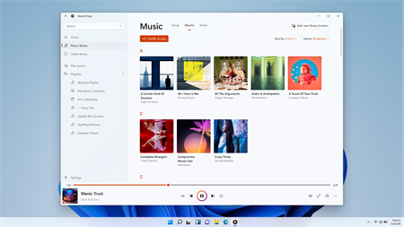
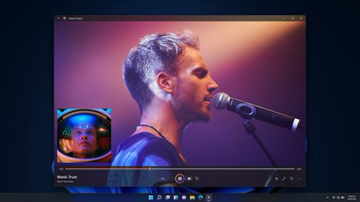
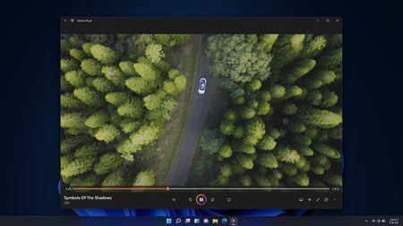
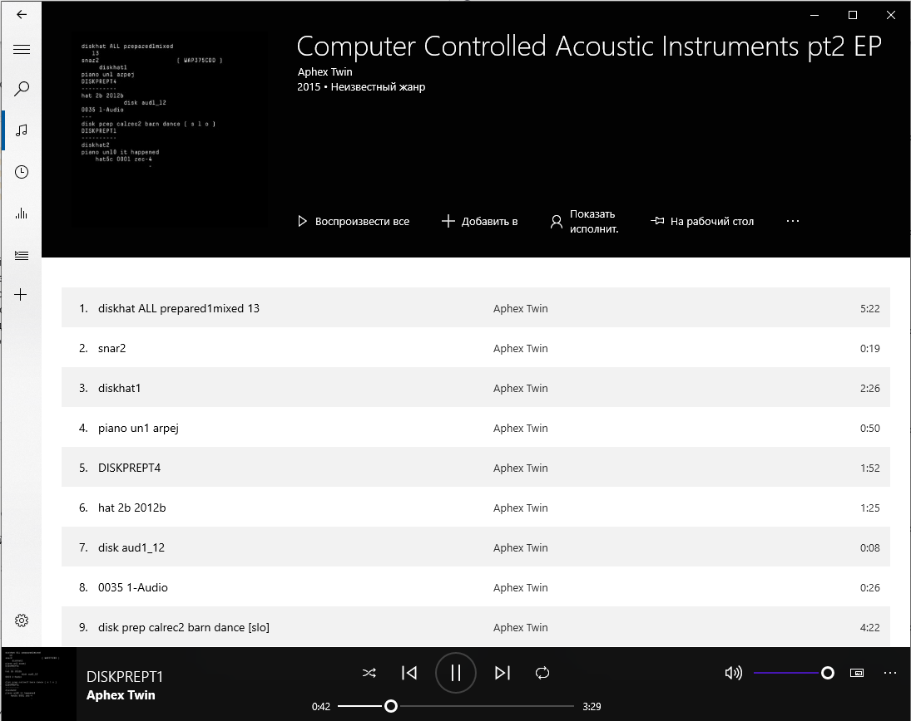
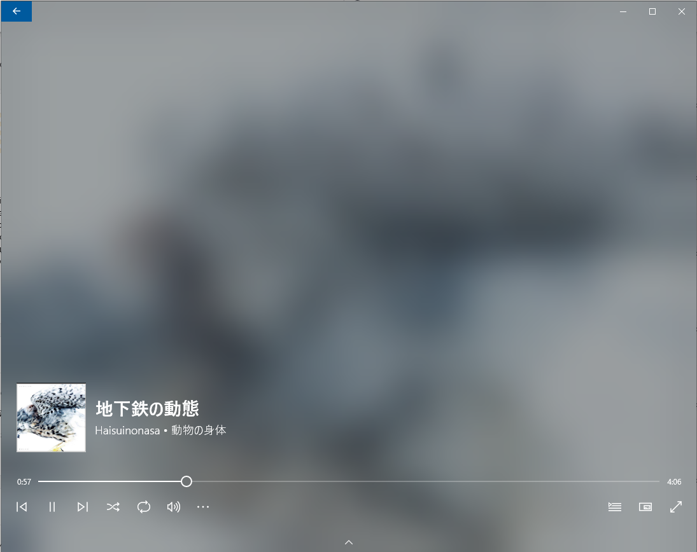
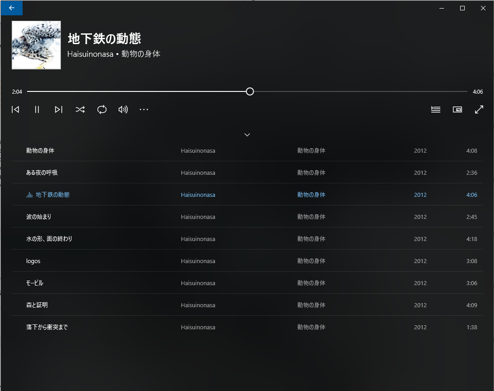
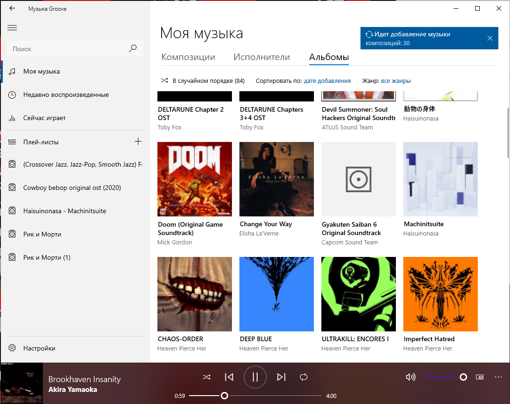
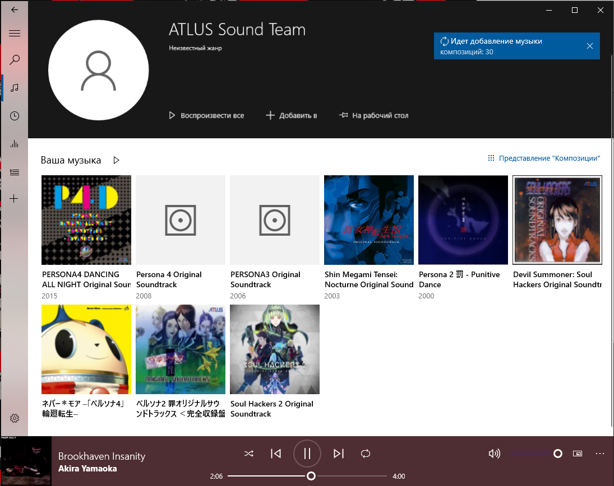
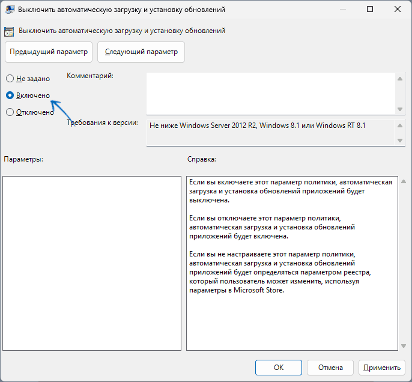

Вас ЗАДОЛБАЛ новый медиа-плеер? Вы хотите поностальгировать по славному 2к16? Чувствуете что вам не хватает интеграций с виндой?
НОВЫЙ МЕДИАПЛЕЕР Microsoft.Zune! Ну ладно, ладно, шутки давайте в сторону. Что меня в целом побудило написать данную статью? Ну, на самом-то деле неудобство нового плеера, его отвратительная работа в 10 винде и его ужасный дизайн. Ниже будут скриншоты нового плеера.



Не знаю как вам, но мне мало того что не нравится новый дизайн медиа-плеера, так я ещё и недоволен его медленной работой (для сравнения, моя медиатека в новом плеере индексировалась 15 минут (и то с ошибками), в старом же она проиндексировалась почти сразу ~за 2 минуты)
Ну и давайте вместе вспомним как хорошо выглядел старый плеер





Некоторые, особо внимательные могут сейчас мне сказать что-то вроде "Рома! Но ты на скринах показываешь нам не Zune, а Groove. Да ты даже на картинках в альте написал что это groove". И эти люди будут отчасти правы. Почему отчасти? Да потому что до медиаплеера, пакет groove назывался Microsoft.Zune! Это уже с выходом нового медиаплеера в 11 винде пакет переименовали в Microsoft.MediaPlayer. Вот такие пироги друзья.
На самом деле всё очень и очень просто. Нужно просто поставить один пакетик в систему и отключить его обновление. Сам пакетик можно стянуть с моего же сервера: ТЫК
Окей. Вот мы скачали всё что нам было нужно. Дальше то что? Нажимаем Win+R на клавиатуре и вводим "gpedit.msc". Без кавычек конечно же. Тыкаем ентер и переходим к новому окну... В редакторе групповых политик нам нужно перейти к разделу «Конфигурация компьютера» — «Административные шаблоны» — «Компоненты Windows» — «Магазин». Дважды нажимаем по политике с именем «Выключить автоматическую загрузку и установку обновлений»

Следующий, и собственно говоря, последний шаг, установка нового "обновления". Для начала нам нужно разрешить ставить сторонние пакеты в нашей любимой Windows 10.
Для этого вам надо перейти в "Параметры" -> "Обновления и безопасность" -> "Для разработчиков" и включить пункт "Установка приложений из любого источника, включая свободные"/
Ну и после этого нам просто нужно открыть AppxBundle файл и нажать кнопку "Обновить"